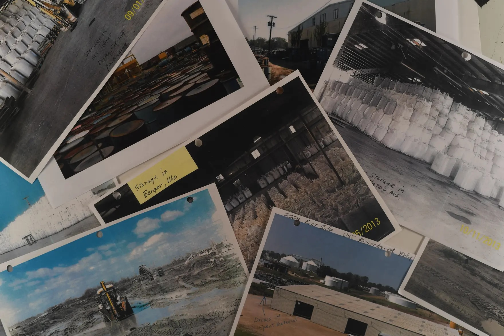
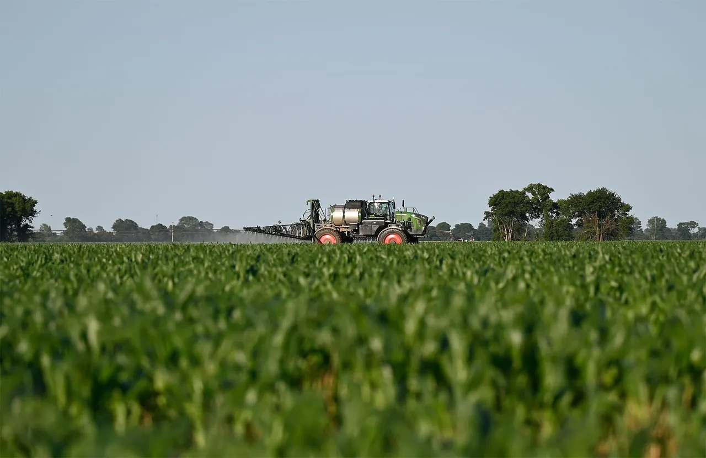

Boom in student housing changes life in downtown Columbia
Created the interactive map graphic, with gifs and hoverable tooltip features
Go to story
Created the interactive map graphic, with gifs and hoverable tooltip features
Go to story
Created an interactive timeline alongside lead reporters, Ceildeh Kern and Harshawn Ratanpal
Go to story
Created interactive map via svelte.kit comparing cancer rates and pesticide use
Go to story